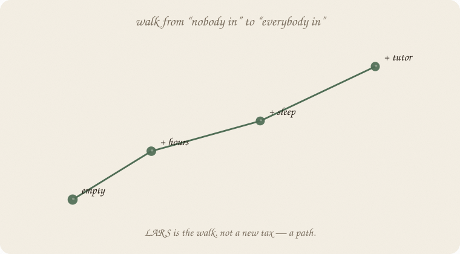
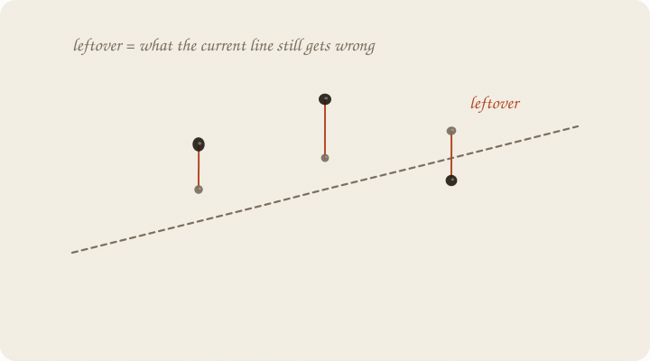
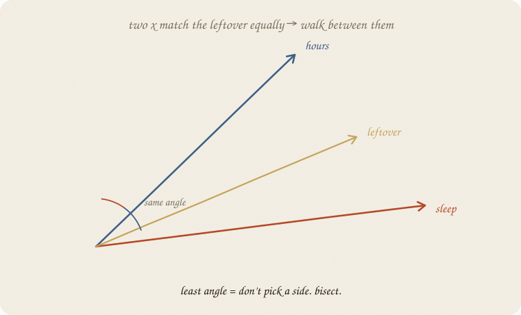
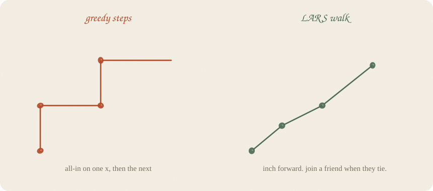
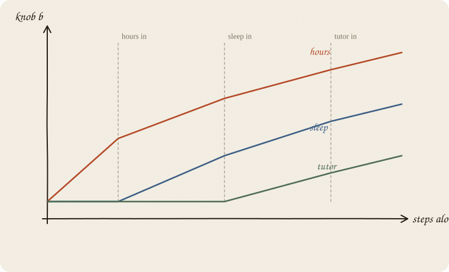
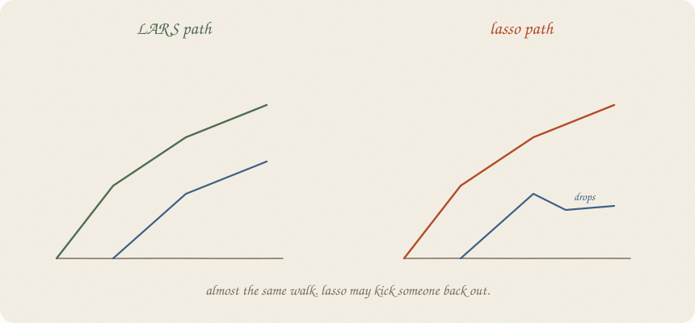
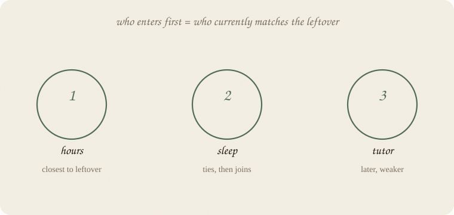

datazines · a sketchbook

Read 01 linear regression and 03 lasso first. LARS is how you travel across models. Lasso is one of the destinations.
Flip it like a notebook. One page = one idea. Done.
Ridge, lasso, elastic net: you change the score. The computer rolls to the bottom of a new bowl.
LARS is a different verb.
You start at the boring line: every b = 0. Just the average grade.
Then you walk, in small steps, adding x as you go.
At the end of a long walk you are close to the ordinary line (everyone in).
Along the way you have a path: a film, not a single still.
The name: Least Angle Regression.
The personality: don’t jump. Bisect.
Whatever line you have right now, each person still has a leftover:
leftover = real grade − current guess

That leftover is a direction. “The part we still get wrong.”
Every x can be asked: how much do you point the same way as this leftover?
Hours might match it well. Coffee might not.
LARS always moves with the leftover. The next step should shrink those vertical misses.
Two x on the page: hours and sleep. The leftover is a third arrow.

If hours is closer to the leftover, take a step with hours.
If sleep catches up — same angle to the leftover — don’t pick a favorite. Walk between them.
That is the “least angle.” Stay equally aligned with everyone who is currently tied.
Greedy methods grab one x and crank it all the way. LARS is too polite for that. It inches, and it lets a friend join the walk when the friend ties.
Old-school “stepwise”:
Jumps. Corners. Easy to overcommit.

LARS:
Same “who is useful” instinct. Different gait. A walk, not a staircase.
As you walk, knobs grow. New ones enter at kinks.

Hours enters first (closest to the leftover).
Sleep joins later, when it ties.
Tutor later still.
Each vertical dashed line is a join. After a join, the direction of the walk changes, because the team changed.
You can stop anywhere along this film. Early = short model. Late = almost ordinary least squares.
Stopping point ≈ choosing λ in lasso. Same habit: hide people, see where new-data pain is smallest, pause there.
Here is the plot twist.
If you take the LARS walk, and you add one extra rule —
if a knob hits zero, drop it and keep walking without it
— you trace the lasso path.

LARS: knobs come in. They tend to stay.
Lasso-via-LARS: a knob can come in, look useful, then get kicked back out if it stops helping.
That is why these two live in the same chapter of textbooks. One is a walk. The other is a tax whose solution happens to look like that walk, with occasional exits.
You do not need the algebra. You need: lasso has a film, and LARS is the camera.
Who joins first is already a story, if you stay humble.

This is not “hours causes the grade more than sleep.”
This is “in this sample, hours looked most like the leftover first.”
Twins will race. Tiny noise can swap 1 and 2. Same warning as lasso.
Still: if you need a shortlist in order, the LARS path is a clean picture of that order.
LARS is not a better line-shape. Still linear.
LARS is not automatically wiser than lasso or ridge. It is a way to compute a path. Fast, especially when you have lots of x and you want the film, not one still.
LARS does not free you from scaling. Angles care about the spelling of x. Scale first, same sermon.
If the leftover is bent — if a straight team of x cannot point at it — walking more politely will not fix that. Different sketchbook.
If you keep only one thing:
lasso is a tax. LARS is the walk that draws the tax’s film.
Same thirty students as ridge and lasso. Scale, then Lars(n_nonzero_coefs=3): stop after three joins, before junk walks in. active_ is the order. coef_path_ is the film.
import numpy as np
from sklearn.linear_model import Lars
from sklearn.model_selection import train_test_split
from sklearn.preprocessing import StandardScaler
rng = np.random.default_rng(7)
n = 30
hours = rng.uniform(1, 6, n)
sleep = rng.uniform(4, 9, n)
tutor = (rng.random(n) > 0.6).astype(float)
coffee = rng.uniform(0, 4, n)
noise = rng.normal(0, 1, n)
minutes = hours * 60 + rng.normal(0, 3, n)
naps = sleep + rng.normal(0, 0.25, n)
grade = 1.8 + 0.9 * hours + 0.35 * sleep + 0.6 * tutor + rng.normal(0, 0.55, n)
X = np.column_stack([hours, minutes, sleep, naps, tutor, coffee, noise])
names = ["hours", "minutes", "sleep", "naps", "tutor", "coffee", "noise"]
Xtr, Xte, ytr, yte = train_test_split(X, grade, test_size=0.3, random_state=0)
Ztr = StandardScaler().fit_transform(Xtr)
lars = Lars(n_nonzero_coefs=3).fit(Ztr, ytr)
print("join order:", [names[i] for i in lars.active_])
print()
print("intercept ", f"{lars.intercept_:7.3f}")
for name, c in zip(names, lars.coef_):
mark = " ← 0" if abs(c) < 1e-8 else ""
print(f"{name:10s} {c:7.3f}{mark}")
print("\ncoef_path_ (columns = steps along the walk)")
path = lars.coef_path_
header = " " * 12 + "".join(f"{s:>8}" for s in range(path.shape[1]))
print(header)
for i, name in enumerate(names):
print(name.ljust(12) + "".join(f"{v:8.2f}" for v in path[i]))
join order: ['hours', 'tutor', 'naps']
intercept 7.241
hours 1.189
minutes 0.000 ← 0
sleep 0.000 ← 0
naps 0.169
tutor 0.344
coffee 0.000 ← 0
noise 0.000 ← 0
coef_path_ (columns = steps along the walk)
0 1 2 3
hours 0.00 0.80 1.03 1.19
minutes 0.00 0.00 0.00 0.00
sleep 0.00 0.00 0.00 0.00
naps 0.00 0.00 0.00 0.17
tutor 0.00 0.00 0.23 0.34
coffee 0.00 0.00 0.00 0.00
noise 0.00 0.00 0.00 0.00
Empty → hours walks in first → tutor joins → naps joins. Minutes never entered (hours already had the leftover). Sleep never entered (naps, the cousin, won). Coffee would be fourth if we kept walking — that is why we stop at three. Intercept 7.241, same trainers.
Page 5’s cartoon had sleep in second. This sample’s leftover liked tutor, then naps. Tiny noise swaps the later joins. Same walk. Do not write a story about the order as fate.
LarsCV would pick the stopping step by hiding people. Same habit as λ.
| word | meaning |
|---|---|
| leftover | y − current ŷ. The compass. |
| least angle | stay equally aligned with whoever is tied |
| path | knobs vs steps. a film of models |
| join | a new x enters. walk turns |
| LARS | the walk |
| lasso | the tax; its path is LARS plus dropouts |
Ridge / lasso / elastic net = what you score.
LARS = how you walk through the answers.
Reach for it when you want the film: who joins, in what order, how knobs grow. Lots of x, you care about the path, not one still. Lasso’s solution happens to look like this walk.
Skip it when you only need one fitted line (ordinary / ridge / lasso with a chosen λ is enough); you thought LARS was a smarter shape (it is not); the leftover is bent.
Pays you: a ranking of entry. A fast path. A camera for the lasso film.
Costs you: not a tax of its own. Order of entry is not fate — twins race. Scale first. Stopping still needs hidden people.
The camera for the lasso film. Family portrait: 01 linear regression → 02 ridge regression → 03 lasso → 04 elastic-net → here. Glasses for other y: 06 GLM.
Flip it like a notebook. One page = one idea.